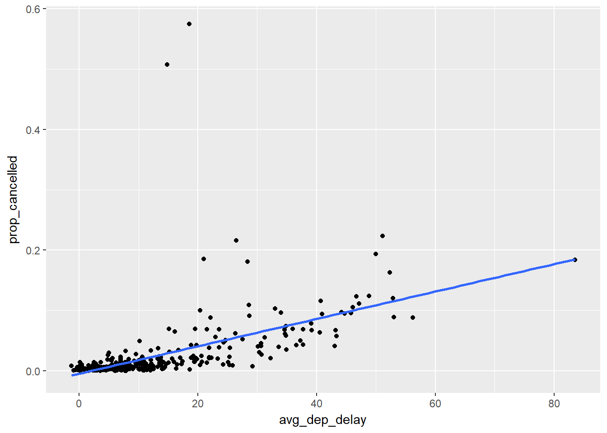
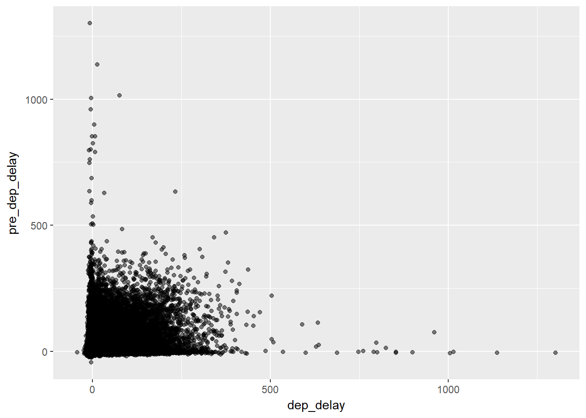

5 Data transformation
5.1 Introduction
No exercises.
5.2 Filter rows with filter()
5.2.1 Exercises
1 - Find all flights that
1. Had an arrival delay of two or more hours
library(tidyverse)
flights <- nycflights13::flights
filter(flights, arr_delay >= 120)## # A tibble: 10,200 x 19
## year month day dep_time sched_dep_time dep_delay arr_time
## <int> <int> <int> <int> <int> <dbl> <int>
## 1 2013 1 1 811 630 101 1047
## 2 2013 1 1 848 1835 853 1001
## 3 2013 1 1 957 733 144 1056
## 4 2013 1 1 1114 900 134 1447
## 5 2013 1 1 1505 1310 115 1638
## 6 2013 1 1 1525 1340 105 1831
## 7 2013 1 1 1549 1445 64.0 1912
## 8 2013 1 1 1558 1359 119 1718
## 9 2013 1 1 1732 1630 62.0 2028
## 10 2013 1 1 1803 1620 103 2008
## # ... with 10,190 more rows, and 12 more variables: sched_arr_time <int>,
## # arr_delay <dbl>, carrier <chr>, flight <int>, tailnum <chr>,
## # origin <chr>, dest <chr>, air_time <dbl>, distance <dbl>, hour <dbl>,
## # minute <dbl>, time_hour <dttm>2. Flew to Houston (IAH or HOU)
filter(flights, dest %in% c('IAH', 'HOU'))## # A tibble: 9,313 x 19
## year month day dep_time sched_dep_time dep_delay arr_time
## <int> <int> <int> <int> <int> <dbl> <int>
## 1 2013 1 1 517 515 2.00 830
## 2 2013 1 1 533 529 4.00 850
## 3 2013 1 1 623 627 - 4.00 933
## 4 2013 1 1 728 732 - 4.00 1041
## 5 2013 1 1 739 739 0 1104
## 6 2013 1 1 908 908 0 1228
## 7 2013 1 1 1028 1026 2.00 1350
## 8 2013 1 1 1044 1045 - 1.00 1352
## 9 2013 1 1 1114 900 134 1447
## 10 2013 1 1 1205 1200 5.00 1503
## # ... with 9,303 more rows, and 12 more variables: sched_arr_time <int>,
## # arr_delay <dbl>, carrier <chr>, flight <int>, tailnum <chr>,
## # origin <chr>, dest <chr>, air_time <dbl>, distance <dbl>, hour <dbl>,
## # minute <dbl>, time_hour <dttm>3. Were operated by United, American, or Delta
filter(flights, carrier %in% c('UA','AA','DL'))## # A tibble: 139,504 x 19
## year month day dep_time sched_dep_time dep_delay arr_time
## <int> <int> <int> <int> <int> <dbl> <int>
## 1 2013 1 1 517 515 2.00 830
## 2 2013 1 1 533 529 4.00 850
## 3 2013 1 1 542 540 2.00 923
## 4 2013 1 1 554 600 -6.00 812
## 5 2013 1 1 554 558 -4.00 740
## 6 2013 1 1 558 600 -2.00 753
## 7 2013 1 1 558 600 -2.00 924
## 8 2013 1 1 558 600 -2.00 923
## 9 2013 1 1 559 600 -1.00 941
## 10 2013 1 1 559 600 -1.00 854
## # ... with 139,494 more rows, and 12 more variables: sched_arr_time <int>,
## # arr_delay <dbl>, carrier <chr>, flight <int>, tailnum <chr>,
## # origin <chr>, dest <chr>, air_time <dbl>, distance <dbl>, hour <dbl>,
## # minute <dbl>, time_hour <dttm>4. Departed in summer (July, August, and September)
filter(flights, month %in% c(7,8,9))## # A tibble: 86,326 x 19
## year month day dep_time sched_dep_time dep_delay arr_time
## <int> <int> <int> <int> <int> <dbl> <int>
## 1 2013 7 1 1 2029 212 236
## 2 2013 7 1 2 2359 3.00 344
## 3 2013 7 1 29 2245 104 151
## 4 2013 7 1 43 2130 193 322
## 5 2013 7 1 44 2150 174 300
## 6 2013 7 1 46 2051 235 304
## 7 2013 7 1 48 2001 287 308
## 8 2013 7 1 58 2155 183 335
## 9 2013 7 1 100 2146 194 327
## 10 2013 7 1 100 2245 135 337
## # ... with 86,316 more rows, and 12 more variables: sched_arr_time <int>,
## # arr_delay <dbl>, carrier <chr>, flight <int>, tailnum <chr>,
## # origin <chr>, dest <chr>, air_time <dbl>, distance <dbl>, hour <dbl>,
## # minute <dbl>, time_hour <dttm>5. Arrived more than two hours late, but didn’t leave late
filter(flights, dep_delay <= 0, arr_delay >= 120)## # A tibble: 29 x 19
## year month day dep_time sched_dep_time dep_delay arr_time
## <int> <int> <int> <int> <int> <dbl> <int>
## 1 2013 1 27 1419 1420 -1.00 1754
## 2 2013 10 7 1350 1350 0 1736
## 3 2013 10 7 1357 1359 -2.00 1858
## 4 2013 10 16 657 700 -3.00 1258
## 5 2013 11 1 658 700 -2.00 1329
## 6 2013 3 18 1844 1847 -3.00 39
## 7 2013 4 17 1635 1640 -5.00 2049
## 8 2013 4 18 558 600 -2.00 1149
## 9 2013 4 18 655 700 -5.00 1213
## 10 2013 5 22 1827 1830 -3.00 2217
## # ... with 19 more rows, and 12 more variables: sched_arr_time <int>,
## # arr_delay <dbl>, carrier <chr>, flight <int>, tailnum <chr>,
## # origin <chr>, dest <chr>, air_time <dbl>, distance <dbl>, hour <dbl>,
## # minute <dbl>, time_hour <dttm>6. Were delayed by at least an hour, but made up over 30 minutes in flight
filter(flights, dep_delay >= 60, dep_delay > arr_delay + 30)## # A tibble: 1,844 x 19
## year month day dep_time sched_dep_time dep_delay arr_time
## <int> <int> <int> <int> <int> <dbl> <int>
## 1 2013 1 1 2205 1720 285 46
## 2 2013 1 1 2326 2130 116 131
## 3 2013 1 3 1503 1221 162 1803
## 4 2013 1 3 1839 1700 99.0 2056
## 5 2013 1 3 1850 1745 65.0 2148
## 6 2013 1 3 1941 1759 102 2246
## 7 2013 1 3 1950 1845 65.0 2228
## 8 2013 1 3 2015 1915 60.0 2135
## 9 2013 1 3 2257 2000 177 45
## 10 2013 1 4 1917 1700 137 2135
## # ... with 1,834 more rows, and 12 more variables: sched_arr_time <int>,
## # arr_delay <dbl>, carrier <chr>, flight <int>, tailnum <chr>,
## # origin <chr>, dest <chr>, air_time <dbl>, distance <dbl>, hour <dbl>,
## # minute <dbl>, time_hour <dttm>7. Departed between midnight and 6am (inclusive)
filter(flights, dep_time >= 0, dep_time <= 600)## # A tibble: 9,344 x 19
## year month day dep_time sched_dep_time dep_delay arr_time
## <int> <int> <int> <int> <int> <dbl> <int>
## 1 2013 1 1 517 515 2.00 830
## 2 2013 1 1 533 529 4.00 850
## 3 2013 1 1 542 540 2.00 923
## 4 2013 1 1 544 545 -1.00 1004
## 5 2013 1 1 554 600 -6.00 812
## 6 2013 1 1 554 558 -4.00 740
## 7 2013 1 1 555 600 -5.00 913
## 8 2013 1 1 557 600 -3.00 709
## 9 2013 1 1 557 600 -3.00 838
## 10 2013 1 1 558 600 -2.00 753
## # ... with 9,334 more rows, and 12 more variables: sched_arr_time <int>,
## # arr_delay <dbl>, carrier <chr>, flight <int>, tailnum <chr>,
## # origin <chr>, dest <chr>, air_time <dbl>, distance <dbl>, hour <dbl>,
## # minute <dbl>, time_hour <dttm>2 - Another useful dplyr filtering helper is between(). What does it do? Can you use it to simplify the code needed to answer the previous challenges?
between() is a shortcut for x >= left & x <= right. Part 7 of the previous question can be rewritten as:
filter(flights, between(dep_time, 0 , 600))## # A tibble: 9,344 x 19
## year month day dep_time sched_dep_time dep_delay arr_time
## <int> <int> <int> <int> <int> <dbl> <int>
## 1 2013 1 1 517 515 2.00 830
## 2 2013 1 1 533 529 4.00 850
## 3 2013 1 1 542 540 2.00 923
## 4 2013 1 1 544 545 -1.00 1004
## 5 2013 1 1 554 600 -6.00 812
## 6 2013 1 1 554 558 -4.00 740
## 7 2013 1 1 555 600 -5.00 913
## 8 2013 1 1 557 600 -3.00 709
## 9 2013 1 1 557 600 -3.00 838
## 10 2013 1 1 558 600 -2.00 753
## # ... with 9,334 more rows, and 12 more variables: sched_arr_time <int>,
## # arr_delay <dbl>, carrier <chr>, flight <int>, tailnum <chr>,
## # origin <chr>, dest <chr>, air_time <dbl>, distance <dbl>, hour <dbl>,
## # minute <dbl>, time_hour <dttm>3 - How many flights have a missing dep_time? What other variables are missing? What might these rows represent?
sum(is.na(flights$dep_time))## [1] 8255There are 8255 flights with missing dep_time. For the flights with missing dep_time, dep_delay, arr_time, arr_delay, and air_time are also missing. It means that these are the flights that were cancelled.
filter(flights, is.na(dep_time))## # A tibble: 8,255 x 19
## year month day dep_time sched_dep_time dep_delay arr_time
## <int> <int> <int> <int> <int> <dbl> <int>
## 1 2013 1 1 NA 1630 NA NA
## 2 2013 1 1 NA 1935 NA NA
## 3 2013 1 1 NA 1500 NA NA
## 4 2013 1 1 NA 600 NA NA
## 5 2013 1 2 NA 1540 NA NA
## 6 2013 1 2 NA 1620 NA NA
## 7 2013 1 2 NA 1355 NA NA
## 8 2013 1 2 NA 1420 NA NA
## 9 2013 1 2 NA 1321 NA NA
## 10 2013 1 2 NA 1545 NA NA
## # ... with 8,245 more rows, and 12 more variables: sched_arr_time <int>,
## # arr_delay <dbl>, carrier <chr>, flight <int>, tailnum <chr>,
## # origin <chr>, dest <chr>, air_time <dbl>, distance <dbl>, hour <dbl>,
## # minute <dbl>, time_hour <dttm>4 - Why is NA ^ 0 not missing? Why is NA | TRUE not missing? Why is FALSE & NA not missing? Can you figure out the general rule? (NA \* 0 is a tricky counterexample!)
One way to think of NA is that it can be a placeholder for any possible values. By this logic:
- any values raised to the power of 0 is 0
NA | TRUE, anything else ORTRUEis alwaysTRUENA & FALSE, anything else ANDFALSEis alwaysFALSE
NA * 0 ? TO DO.
5.3 Arrange rows with arrange()
5.3.1 Exercises
1 - How could you use arrange() to sort all missing values to the start? (Hint: use is.na()).
One way to put missing dep_delay to the start:
head(arrange(flights, desc(is.na(dep_delay))))## # A tibble: 6 x 19
## year month day dep_time sched_dep_time dep_delay arr_time
## <int> <int> <int> <int> <int> <dbl> <int>
## 1 2013 1 1 NA 1630 NA NA
## 2 2013 1 1 NA 1935 NA NA
## 3 2013 1 1 NA 1500 NA NA
## 4 2013 1 1 NA 600 NA NA
## 5 2013 1 2 NA 1540 NA NA
## 6 2013 1 2 NA 1620 NA NA
## # ... with 12 more variables: sched_arr_time <int>, arr_delay <dbl>,
## # carrier <chr>, flight <int>, tailnum <chr>, origin <chr>, dest <chr>,
## # air_time <dbl>, distance <dbl>, hour <dbl>, minute <dbl>,
## # time_hour <dttm>2 - Sort flights to find the most delayed flights. Find the flights that left earliest.
The top 5 most delayed flights:
head(arrange(flights, desc(dep_delay)))## # A tibble: 6 x 19
## year month day dep_time sched_dep_time dep_delay arr_time
## <int> <int> <int> <int> <int> <dbl> <int>
## 1 2013 1 9 641 900 1301 1242
## 2 2013 6 15 1432 1935 1137 1607
## 3 2013 1 10 1121 1635 1126 1239
## 4 2013 9 20 1139 1845 1014 1457
## 5 2013 7 22 845 1600 1005 1044
## 6 2013 4 10 1100 1900 960 1342
## # ... with 12 more variables: sched_arr_time <int>, arr_delay <dbl>,
## # carrier <chr>, flight <int>, tailnum <chr>, origin <chr>, dest <chr>,
## # air_time <dbl>, distance <dbl>, hour <dbl>, minute <dbl>,
## # time_hour <dttm>The top 5 flights that left earliest:
head(arrange(flights, dep_delay))## # A tibble: 6 x 19
## year month day dep_time sched_dep_time dep_delay arr_time
## <int> <int> <int> <int> <int> <dbl> <int>
## 1 2013 12 7 2040 2123 -43.0 40
## 2 2013 2 3 2022 2055 -33.0 2240
## 3 2013 11 10 1408 1440 -32.0 1549
## 4 2013 1 11 1900 1930 -30.0 2233
## 5 2013 1 29 1703 1730 -27.0 1947
## 6 2013 8 9 729 755 -26.0 1002
## # ... with 12 more variables: sched_arr_time <int>, arr_delay <dbl>,
## # carrier <chr>, flight <int>, tailnum <chr>, origin <chr>, dest <chr>,
## # air_time <dbl>, distance <dbl>, hour <dbl>, minute <dbl>,
## # time_hour <dttm>3 - Sort flights to find the fastest flights.
Top 5 fastest flights:
head(arrange(flights, air_time))## # A tibble: 6 x 19
## year month day dep_time sched_dep_time dep_delay arr_time
## <int> <int> <int> <int> <int> <dbl> <int>
## 1 2013 1 16 1355 1315 40.0 1442
## 2 2013 4 13 537 527 10.0 622
## 3 2013 12 6 922 851 31.0 1021
## 4 2013 2 3 2153 2129 24.0 2247
## 5 2013 2 5 1303 1315 -12.0 1342
## 6 2013 2 12 2123 2130 - 7.00 2211
## # ... with 12 more variables: sched_arr_time <int>, arr_delay <dbl>,
## # carrier <chr>, flight <int>, tailnum <chr>, origin <chr>, dest <chr>,
## # air_time <dbl>, distance <dbl>, hour <dbl>, minute <dbl>,
## # time_hour <dttm>4 - Which flights travelled the longest? Which travelled the shortest?
Top 5 flights that travelled the longest:
head(arrange(flights, desc(distance)))## # A tibble: 6 x 19
## year month day dep_time sched_dep_time dep_delay arr_time
## <int> <int> <int> <int> <int> <dbl> <int>
## 1 2013 1 1 857 900 - 3.00 1516
## 2 2013 1 2 909 900 9.00 1525
## 3 2013 1 3 914 900 14.0 1504
## 4 2013 1 4 900 900 0 1516
## 5 2013 1 5 858 900 - 2.00 1519
## 6 2013 1 6 1019 900 79.0 1558
## # ... with 12 more variables: sched_arr_time <int>, arr_delay <dbl>,
## # carrier <chr>, flight <int>, tailnum <chr>, origin <chr>, dest <chr>,
## # air_time <dbl>, distance <dbl>, hour <dbl>, minute <dbl>,
## # time_hour <dttm>Top 5 flights that travelled the shortest:
head(arrange(flights, distance))## # A tibble: 6 x 19
## year month day dep_time sched_dep_time dep_delay arr_time
## <int> <int> <int> <int> <int> <dbl> <int>
## 1 2013 7 27 NA 106 NA NA
## 2 2013 1 3 2127 2129 - 2.00 2222
## 3 2013 1 4 1240 1200 40.0 1333
## 4 2013 1 4 1829 1615 134 1937
## 5 2013 1 4 2128 2129 - 1.00 2218
## 6 2013 1 5 1155 1200 - 5.00 1241
## # ... with 12 more variables: sched_arr_time <int>, arr_delay <dbl>,
## # carrier <chr>, flight <int>, tailnum <chr>, origin <chr>, dest <chr>,
## # air_time <dbl>, distance <dbl>, hour <dbl>, minute <dbl>,
## # time_hour <dttm>5.4 Select columns with select()
5.4.1 Exercises
1 - Brainstorm as many ways as possible to select dep_time, dep_delay, arr_time, and arr_delay from flights.
One way to select those variables is to include each of them in the select function:
select(flights, dep_time, dep_delay, arr_time, arr_delay)## # A tibble: 336,776 x 4
## dep_time dep_delay arr_time arr_delay
## <int> <dbl> <int> <dbl>
## 1 517 2.00 830 11.0
## 2 533 4.00 850 20.0
## 3 542 2.00 923 33.0
## 4 544 -1.00 1004 -18.0
## 5 554 -6.00 812 -25.0
## 6 554 -4.00 740 12.0
## 7 555 -5.00 913 19.0
## 8 557 -3.00 709 -14.0
## 9 557 -3.00 838 - 8.00
## 10 558 -2.00 753 8.00
## # ... with 336,766 more rowsAnother way to do it is to use starts_with():
select(flights, starts_with('dep'), starts_with('arr'))## # A tibble: 336,776 x 4
## dep_time dep_delay arr_time arr_delay
## <int> <dbl> <int> <dbl>
## 1 517 2.00 830 11.0
## 2 533 4.00 850 20.0
## 3 542 2.00 923 33.0
## 4 544 -1.00 1004 -18.0
## 5 554 -6.00 812 -25.0
## 6 554 -4.00 740 12.0
## 7 555 -5.00 913 19.0
## 8 557 -3.00 709 -14.0
## 9 557 -3.00 838 - 8.00
## 10 558 -2.00 753 8.00
## # ... with 336,766 more rows2 - What happens if you include the name of a variable multiple times in a select() call?
The repeated variables will not be included. See below.
select(flights, dep_time, dep_time, dep_time)## # A tibble: 336,776 x 1
## dep_time
## <int>
## 1 517
## 2 533
## 3 542
## 4 544
## 5 554
## 6 554
## 7 555
## 8 557
## 9 557
## 10 558
## # ... with 336,766 more rows3 - What does the one_of() function do? Why might it be helpful in conjunction with this vector?
vars <- c("year", "month", "day", "dep_delay", "arr_delay")‘one_of()’ allows you to select variables in the character vector. For example:
select(flights, one_of(vars))## # A tibble: 336,776 x 5
## year month day dep_delay arr_delay
## <int> <int> <int> <dbl> <dbl>
## 1 2013 1 1 2.00 11.0
## 2 2013 1 1 4.00 20.0
## 3 2013 1 1 2.00 33.0
## 4 2013 1 1 -1.00 -18.0
## 5 2013 1 1 -6.00 -25.0
## 6 2013 1 1 -4.00 12.0
## 7 2013 1 1 -5.00 19.0
## 8 2013 1 1 -3.00 -14.0
## 9 2013 1 1 -3.00 - 8.00
## 10 2013 1 1 -2.00 8.00
## # ... with 336,766 more rowsThe 5 variables in the vector vars are selected.
4 - Does the result of running the following code surprise you? How do the select helpers deal with case by default? How can you change that default?
select(flights, contains("TIME"))## # A tibble: 336,776 x 6
## dep_time sched_dep_time arr_time sched_arr_time air_time
## <int> <int> <int> <int> <dbl>
## 1 517 515 830 819 227
## 2 533 529 850 830 227
## 3 542 540 923 850 160
## 4 544 545 1004 1022 183
## 5 554 600 812 837 116
## 6 554 558 740 728 150
## 7 555 600 913 854 158
## 8 557 600 709 723 53.0
## 9 557 600 838 846 140
## 10 558 600 753 745 138
## # ... with 336,766 more rows, and 1 more variable: time_hour <dttm>The original code intends to select variables containing the characters TIME. However, the selected variables contain the lower case time instead. By default, contains() is not case sensitive. To override this behaviour, we can use ignore.case = FALSE. For example:
select(flights, contains("TIME", ignore.case = FALSE))## # A tibble: 336,776 x 0In this case, no variables are being selected because none of the variables contain the character string TIME.
5.5 Add new variables with mutate()
5.5.1 Exercises
1 - Currently dep_time and sched_dep_time are convenient to look at, but hard to compute with because they’re not really continuous numbers. Convert them to a more convenient representation of number of minutes since midnight.
flights <- mutate(flights,
dep_time_mins = dep_time %/% 100 * 60 + dep_time %% 100,
sched_dep_time_mins = sched_dep_time %/% 100 * 60 +
sched_dep_time %% 100)
select(flights, starts_with('dep_time'), starts_with('sched'))## # A tibble: 336,776 x 5
## dep_time dep_time_mins sched_dep_time sched_arr_time sched_dep_time_mi~
## <int> <dbl> <int> <int> <dbl>
## 1 517 317 515 819 315
## 2 533 333 529 830 329
## 3 542 342 540 850 340
## 4 544 344 545 1022 345
## 5 554 354 600 837 360
## 6 554 354 558 728 358
## 7 555 355 600 854 360
## 8 557 357 600 723 360
## 9 557 357 600 846 360
## 10 558 358 600 745 360
## # ... with 336,766 more rows2 - Compare air_time with arr_time - dep_time. What do you expect to see? What do you see? What do you need to do to fix it?
air_time is the amount of time spent in the air in minutes, and we would expect to see air_time and arr_time - dep_time to be the same. First, let’s define a new variable flight_time as the difference between arr_time and dep_time. Comparing it with air_time:
flights %>% mutate(flight_time = arr_time - dep_time) %>%
select(air_time, flight_time)## # A tibble: 336,776 x 2
## air_time flight_time
## <dbl> <int>
## 1 227 313
## 2 227 317
## 3 160 381
## 4 183 460
## 5 116 258
## 6 150 186
## 7 158 358
## 8 53.0 152
## 9 140 281
## 10 138 195
## # ... with 336,766 more rowsThe computed flight_time is very different from air_time. The difference is mainly due to the fact that the original arr_time and dep_time are not really continuous numbers. To remedy this, arr_time is converted to minutes since midnight, same as previous question, and then flight_time is recalculated.
flights <- mutate(flights,
arr_time_mins = arr_time %/% 100 * 60 + arr_time %% 100)
flights <- mutate(flights, flight_time = arr_time_mins - dep_time_mins)
select(flights, air_time, flight_time)## # A tibble: 336,776 x 2
## air_time flight_time
## <dbl> <dbl>
## 1 227 193
## 2 227 197
## 3 160 221
## 4 183 260
## 5 116 138
## 6 150 106
## 7 158 198
## 8 53.0 72.0
## 9 140 161
## 10 138 115
## # ... with 336,766 more rowsAgain, we see the given air_time is different from the computed flight_time. In fact, only 196 flights have the same air_time and computed flight_time.
sum(flights$air_time == flights$flight_time, na.rm = TRUE)## [1] 1963 - Compare dep_time, sched_dep_time, and dep_delay. How would you expect those three numbers to be related?
select(flights, dep_time, sched_dep_time, dep_delay)## # A tibble: 336,776 x 3
## dep_time sched_dep_time dep_delay
## <int> <int> <dbl>
## 1 517 515 2.00
## 2 533 529 4.00
## 3 542 540 2.00
## 4 544 545 -1.00
## 5 554 600 -6.00
## 6 554 558 -4.00
## 7 555 600 -5.00
## 8 557 600 -3.00
## 9 557 600 -3.00
## 10 558 600 -2.00
## # ... with 336,766 more rowsdep_time and sched_dep_time are in clock format. Their difference in minutes is given by dep_delay.
4 - Find the 10 most delayed flights using a ranking function. How do you want to handle ties? Carefully read the documentation for min_rank()
head(arrange(flights, min_rank(desc(dep_delay))), 10)## # A tibble: 10 x 23
## year month day dep_time sched_dep_time dep_delay arr_time
## <int> <int> <int> <int> <int> <dbl> <int>
## 1 2013 1 9 641 900 1301 1242
## 2 2013 6 15 1432 1935 1137 1607
## 3 2013 1 10 1121 1635 1126 1239
## 4 2013 9 20 1139 1845 1014 1457
## 5 2013 7 22 845 1600 1005 1044
## 6 2013 4 10 1100 1900 960 1342
## 7 2013 3 17 2321 810 911 135
## 8 2013 6 27 959 1900 899 1236
## 9 2013 7 22 2257 759 898 121
## 10 2013 12 5 756 1700 896 1058
## # ... with 16 more variables: sched_arr_time <int>, arr_delay <dbl>,
## # carrier <chr>, flight <int>, tailnum <chr>, origin <chr>, dest <chr>,
## # air_time <dbl>, distance <dbl>, hour <dbl>, minute <dbl>,
## # time_hour <dttm>, dep_time_mins <dbl>, sched_dep_time_mins <dbl>,
## # arr_time_mins <dbl>, flight_time <dbl>min_rank() is equivalent to rank() method with the argument ties.method = 'min. It assigns every tied element to the lowest rank.
5 - What does 1:3 + 1:10 return? Why?
R performs vectorized calculations. For example, when we add two vectors of the same length together, c(1,2,3) + c(4,5,6), the result will be c(5,7,9). When we add two vectors of different lengths, the shorter vector with be ‘repeated’ to match the length of the longer vector.
1:3 + 1:10## Warning in 1:3 + 1:10: longer object length is not a multiple of shorter
## object length## [1] 2 4 6 5 7 9 8 10 12 116 - What trigonometric functions does R provide?
Type ?sin to see a complete list of trignomometric functions.
5.6 Grouped summaries with summarise()
5.6.1 Exercises
1 - Brainstorm at least 5 different ways to assess the typical delay characteristics of a group of flights. Consider the following scenarios:
- A flight is 15 minutes early 50% of the time, and 15 minutes late 50% of the time.
- A flight is always 10 minutes late.
- A flight is 30 minutes early 50% of the time, and 30 minutes late 50% of the time.
- 99% of the time a flight is on time. 1% of the time it’s 2 hours late.
Which is more important: arrival delay or departure delay?
Just some personal and non-scientific reasoning, to me, arrival delay is more important than departure delay.
2 - Come up with another approach that will give you the same output as not_cancelled %>% count(dest) and not_cancelled %>% count(tailnum, wt = distance) (without using count()).
We can use n() instead in summarize() to obtain the same output as not_cancelled %>% count(dest).
flights %>%
filter(!is.na(dep_delay), !is.na(arr_delay)) %>%
group_by(dest) %>% summarize(count = n())## # A tibble: 104 x 2
## dest count
## <chr> <int>
## 1 ABQ 254
## 2 ACK 264
## 3 ALB 418
## 4 ANC 8
## 5 ATL 16837
## 6 AUS 2411
## 7 AVL 261
## 8 BDL 412
## 9 BGR 358
## 10 BHM 269
## # ... with 94 more rowsAnd for not_cancelled %>% count(tailnum, wt = distance), we group by tailnum and sum the distance.
flights %>%
filter(!is.na(dep_delay), !is.na(arr_delay)) %>%
group_by(tailnum) %>% summarize(count = sum(distance))## # A tibble: 4,037 x 2
## tailnum count
## <chr> <dbl>
## 1 D942DN 3418
## 2 N0EGMQ 239143
## 3 N10156 109664
## 4 N102UW 25722
## 5 N103US 24619
## 6 N104UW 24616
## 7 N10575 139903
## 8 N105UW 23618
## 9 N107US 21677
## 10 N108UW 32070
## # ... with 4,027 more rows3 - Our definition of cancelled flights (is.na(dep_delay) | is.na(arr_delay) ) is slightly suboptimal. Why? Which is the most important column?
Let’s see how ‘cancelled flights’ are defined in the flights dataset. Natrually one would think that cancelled flights are those that never departed from the origins and never arrived at the destinations. Checking the NA counts in those columns:
flights %>% select(starts_with("dep"), starts_with("arr")) %>%
sapply(function(x){sum(is.na(x))})## dep_time dep_delay dep_time_mins arr_time arr_delay
## 8255 8255 8255 8713 9430
## arr_time_mins
## 8713We see that the NA counts for dep_time and arr_time don’t match. The difference is 8713 - 8255 = 458. One possible explanation is that those flights did actually take off, but arrived at a different airport or were forced to return to the origins. To confirm my hypothesis, we can look at the number of observations with non missing departure time and missing arrival time:
nrow(flights %>% filter(!is.na(dep_time), is.na(arr_time)))## [1] 458The NA count for arr_delay is a bit mysterious. A closer look at the flights dataset reveals that the NA count for arr_delay is the same as the NA count for air_time. There were flights that did depart and arrive, but with missing air_time and arr_delay.
So my conclusion is, depending on how you define cancelled flights (never departed from the origin or never arrived at the destination), dep_time or arr_time should be used to filter cancelled flights.
4 - Look at the number of cancelled flights per day. Is there a pattern? Is the proportion of cancelled flights related to the average delay?
Here, I define cancelled flights as those never departed at the origin in the first place. As can be seen in the plot below, there is a positive linear trend.
flights %>% group_by(month, day) %>%
summarize(avg_dep_delay = mean(dep_delay, na.rm = TRUE),
prop_cancelled = sum(is.na(dep_time)/n())) %>%
ggplot(mapping = aes(x = avg_dep_delay, y = prop_cancelled)) +
geom_point() +
geom_smooth(method = 'lm', se = FALSE)
5 - Which carrier has the worst delays? Challenge: can you disentangle the effects of bad airports vs. bad carriers? Why/why not? (Hint: think about flights %>% group_by(carrier, dest) %>% summarise(n()))
First we need to decide how we quantify and compare delays between carriers. For this question we’ll just simply calculate the average minutes in arrival and departure delays.
worst <- flights %>% group_by(carrier) %>%
summarize(avg_arr_delay = mean(arr_delay, na.rm = TRUE),
avg_dep_delay = mean(dep_delay, na.rm = TRUE))Arrange by average arrival delay in minutes:
arrange(worst, desc(avg_arr_delay))## # A tibble: 16 x 3
## carrier avg_arr_delay avg_dep_delay
## <chr> <dbl> <dbl>
## 1 F9 21.9 20.2
## 2 FL 20.1 18.7
## 3 EV 15.8 20.0
## 4 YV 15.6 19.0
## 5 OO 11.9 12.6
## 6 MQ 10.8 10.6
## 7 WN 9.65 17.7
## 8 B6 9.46 13.0
## 9 9E 7.38 16.7
## 10 UA 3.56 12.1
## 11 US 2.13 3.78
## 12 VX 1.76 12.9
## 13 DL 1.64 9.26
## 14 AA 0.364 8.59
## 15 HA - 6.92 4.90
## 16 AS - 9.93 5.80Arrange by average departure delay in minutes:
arrange(worst, desc(avg_dep_delay))## # A tibble: 16 x 3
## carrier avg_arr_delay avg_dep_delay
## <chr> <dbl> <dbl>
## 1 F9 21.9 20.2
## 2 EV 15.8 20.0
## 3 YV 15.6 19.0
## 4 FL 20.1 18.7
## 5 WN 9.65 17.7
## 6 9E 7.38 16.7
## 7 B6 9.46 13.0
## 8 VX 1.76 12.9
## 9 OO 11.9 12.6
## 10 UA 3.56 12.1
## 11 MQ 10.8 10.6
## 12 DL 1.64 9.26
## 13 AA 0.364 8.59
## 14 AS - 9.93 5.80
## 15 HA - 6.92 4.90
## 16 US 2.13 3.78Similarly we can look at which airport has the worst departure delay:
flights %>% group_by(origin) %>%
summarize(avg_dep_delay = mean(dep_delay, na.rm = TRUE)) ## # A tibble: 3 x 2
## origin avg_dep_delay
## <chr> <dbl>
## 1 EWR 15.1
## 2 JFK 12.1
## 3 LGA 10.3and the worst arrival delay:
flights %>% group_by(origin) %>%
summarize(avg_arr_delay = mean(arr_delay, na.rm = TRUE)) ## # A tibble: 3 x 2
## origin avg_arr_delay
## <chr> <dbl>
## 1 EWR 9.11
## 2 JFK 5.55
## 3 LGA 5.78We can attempt to disentangle the effects of departure delay for carrier 9E:
flights %>% group_by(carrier, origin) %>%
summarize(avg_dep_delay = mean(dep_delay, na.rm = TRUE)) %>%
filter(carrier == '9E')## # A tibble: 3 x 3
## # Groups: carrier [1]
## carrier origin avg_dep_delay
## <chr> <chr> <dbl>
## 1 9E EWR 5.95
## 2 9E JFK 19.0
## 3 9E LGA 8.89The overall average departure delay is 16.73 minutes from the previous table. However, we can conclude that at least for carrier 9E, on average, the flights were delayed most at JFK.
6 - What does the sort argument to count() do. When might you use it?
The sort argument if set to TRUE, will sort the output in descending order. For example, without sort = TRUE:
flights %>%
filter(!is.na(dep_delay), !is.na(arr_delay)) %>%
count(dest)## # A tibble: 104 x 2
## dest n
## <chr> <int>
## 1 ABQ 254
## 2 ACK 264
## 3 ALB 418
## 4 ANC 8
## 5 ATL 16837
## 6 AUS 2411
## 7 AVL 261
## 8 BDL 412
## 9 BGR 358
## 10 BHM 269
## # ... with 94 more rowsWith sort = TRUE:
flights %>%
filter(!is.na(dep_delay), !is.na(arr_delay)) %>%
count(dest, sort = TRUE)## # A tibble: 104 x 2
## dest n
## <chr> <int>
## 1 ATL 16837
## 2 ORD 16566
## 3 LAX 16026
## 4 BOS 15022
## 5 MCO 13967
## 6 CLT 13674
## 7 SFO 13173
## 8 FLL 11897
## 9 MIA 11593
## 10 DCA 9111
## # ... with 94 more rows5.7 Grouped mutates (and filters)
5.7.1 Exercises
1 - Refer back to the lists of useful mutate and filtering functions. Describe how each operation changes when you combine it with grouping.
Before grouping, functions like mean(), median(), min(), or max() will operation over the whole dataset. For example, applying mean() on a variable before grouping will get the average of the variable over the entire dataset.
After grouping, these functions will operate within each group.
2 - Which plane (tailnum) has the worst on-time record?
Filter out the on-time departure records and calculate the average departure delay in minutes.
flights %>% group_by(tailnum) %>%
filter(dep_delay > 0) %>%
summarize(avg_delay = mean(dep_delay)) %>%
arrange(desc(avg_delay))## # A tibble: 3,885 x 2
## tailnum avg_delay
## <chr> <dbl>
## 1 N844MH 297
## 2 N452UW 291
## 3 N922EV 274
## 4 N587NW 272
## 5 N911DA 268
## 6 N665MQ 268
## 7 N673MQ 257
## 8 N851NW 233
## 9 N654UA 227
## 10 N550NW 212
## # ... with 3,875 more rows3 - What time of day should you fly if you want to avoid delays as much as possible?
Similar to above question, we filter out the on-time departures and calculate the average departure delay in minuts for each hour.
flights %>% filter (dep_delay > 0) %>%
group_by(hour) %>%
summarize(avg_delay = mean(dep_delay)) %>%
arrange(avg_delay)## # A tibble: 19 x 2
## hour avg_delay
## <dbl> <dbl>
## 1 5.00 15.3
## 2 7.00 24.1
## 3 6.00 24.2
## 4 9.00 29.7
## 5 8.00 29.9
## 6 12.0 32.3
## 7 11.0 32.5
## 8 10.0 32.6
## 9 13.0 33.5
## 10 14.0 37.1
## 11 23.0 38.0
## 12 15.0 38.8
## 13 16.0 43.4
## 14 17.0 45.3
## 15 18.0 46.5
## 16 22.0 46.5
## 17 20.0 49.6
## 18 21.0 50.3
## 19 19.0 51.14 - For each destination, compute the total minutes of delay. For each flight, compute the proportion of the total delay for its destination.
We select only dest and arr_delay variables. We also filter out on-time flights or flights that were cancelled.
flights %>% select(dest, arr_delay) %>% group_by(dest) %>%
filter(arr_delay > 0) %>%
mutate(total_delay = sum(arr_delay, na.rm = TRUE),
prop_delay = arr_delay / total_delay)## # A tibble: 133,004 x 4
## # Groups: dest [103]
## dest arr_delay total_delay prop_delay
## <chr> <dbl> <dbl> <dbl>
## 1 IAH 11.0 99391 0.000111
## 2 IAH 20.0 99391 0.000201
## 3 MIA 33.0 140424 0.000235
## 4 ORD 12.0 283046 0.0000424
## 5 FLL 19.0 202605 0.0000938
## 6 ORD 8.00 283046 0.0000283
## 7 LAX 7.00 203226 0.0000344
## 8 DFW 31.0 110009 0.000282
## 9 ATL 12.0 300299 0.0000400
## 10 DTW 16.0 138258 0.000116
## # ... with 132,994 more rows5 - Delays are typically temporally correlated: even once the problem that caused the initial delay has been resolved, later flights are delayed to allow earlier flights to leave. Using lag() explore how the delay of a flight is related to the delay of the immediately preceding flight.
Let’s focus on flights departing from JFK and assume we can ignore the effect of cancelled flights:
flights %>% filter(origin == 'JFK') %>% filter(!is.na(dep_delay)) %>%
mutate(pre_dep_delay = lag(dep_delay, default = 0)) %>%
ggplot(mapping = aes(x = dep_delay, y= pre_dep_delay)) +
geom_point(alpha = .5)
The mass of data on the bottom left shows that the departure delay and the previous depart delay are related. The correlation is:
flights <- flights %>% filter(origin == 'JFK') %>% filter(!is.na(dep_delay)) %>%
mutate(pre_dep_delay = lag(dep_delay, default = 0))
cor(flights$dep_delay, flights$pre_dep_delay)## [1] 0.29280646 - Look at each destination. Can you find flights that are suspiciously fast? (i.e. flights that represent a potential data entry error). Compute the air time a flight relative to the shortest flight to that destination. Which flights were most delayed in the air?
To find flights that are suspiciously fast, in other words, outliers that are far below than the average air_time, we can compute z-score, or the number of standard deviations below/above the mean air_time.
flights %>% filter(!is.na(air_time)) %>% group_by(dest) %>%
mutate(air_time_mean = mean(air_time),
air_time_sd = sd(air_time),
z = (air_time - air_time_mean) / air_time_sd) %>%
select(z, air_time_mean, dest, everything()) %>%
arrange(z)## # A tibble: 109,079 x 27
## # Groups: dest [70]
## z air_time_mean dest year month day dep_time sched_dep_time
## <dbl> <dbl> <chr> <int> <int> <int> <int> <int>
## 1 -4.10 57.1 BUF 2013 11 10 2307 2250
## 2 -3.80 51.9 ROC 2013 3 25 2340 2250
## 3 -3.55 329 SEA 2013 7 3 1533 1459
## 4 -3.51 52.6 ORF 2013 11 3 1720 1645
## 5 -3.40 66.5 PIT 2013 7 17 1504 1505
## 6 -3.03 66.5 PIT 2013 5 8 1947 1859
## 7 -3.03 329 SEA 2013 5 6 1728 1730
## 8 -2.99 331 PDX 2013 5 6 1753 1755
## 9 -2.98 329 LAX 2013 9 6 2042 2025
## 10 -2.97 329 SEA 2013 5 6 1553 1557
## # ... with 109,069 more rows, and 19 more variables: dep_delay <dbl>,
## # arr_time <int>, sched_arr_time <int>, arr_delay <dbl>, carrier <chr>,
## # flight <int>, tailnum <chr>, origin <chr>, air_time <dbl>,
## # distance <dbl>, hour <dbl>, minute <dbl>, time_hour <dttm>,
## # dep_time_mins <dbl>, sched_dep_time_mins <dbl>, arr_time_mins <dbl>,
## # flight_time <dbl>, pre_dep_delay <dbl>, air_time_sd <dbl>I would say that air_time that are 2 standard deviations below the are unusually fast.
Similarly we can look at which flights are most delayed in the air.
flights %>% filter(!is.na(air_time)) %>% group_by(dest) %>%
mutate(air_time_mean = mean(air_time),
air_time_sd = sd(air_time),
z = (air_time - air_time_mean) / air_time_sd) %>%
select(z, air_time_mean, dest, everything()) %>%
arrange(desc(z))## # A tibble: 109,079 x 27
## # Groups: dest [70]
## z air_time_mean dest year month day dep_time sched_dep_time
## <dbl> <dbl> <chr> <int> <int> <int> <int> <int>
## 1 13.9 44.5 SYR 2013 9 1 2237 1711
## 2 12.2 42.1 ACK 2013 6 29 755 800
## 3 11.8 38.5 BOS 2013 7 23 1617 1605
## 4 10.8 38.5 BOS 2013 7 23 1200 1200
## 5 10.4 71.9 RDU 2013 9 1 1719 1712
## 6 10.3 57.1 BUF 2013 12 16 923 925
## 7 9.91 87.6 DTW 2013 7 27 1654 1620
## 8 9.74 38.5 BOS 2013 2 17 841 840
## 9 9.74 38.5 BOS 2013 7 23 1242 1245
## 10 9.69 51.9 ROC 2013 7 10 2350 2030
## # ... with 109,069 more rows, and 19 more variables: dep_delay <dbl>,
## # arr_time <int>, sched_arr_time <int>, arr_delay <dbl>, carrier <chr>,
## # flight <int>, tailnum <chr>, origin <chr>, air_time <dbl>,
## # distance <dbl>, hour <dbl>, minute <dbl>, time_hour <dttm>,
## # dep_time_mins <dbl>, sched_dep_time_mins <dbl>, arr_time_mins <dbl>,
## # flight_time <dbl>, pre_dep_delay <dbl>, air_time_sd <dbl>10 standard deviations above the mean!
7 - Find all destinations that are flown by at least two carriers. Use that information to rank the carriers.
Destinations that are flown by the most number of carriers:
flights %>% group_by(dest) %>%
summarise(num_carrier = length(unique(carrier))) %>%
filter(num_carrier >= 2) %>%
arrange(desc(num_carrier))## # A tibble: 45 x 2
## dest num_carrier
## <chr> <int>
## 1 LAX 5
## 2 SFO 5
## 3 TPA 5
## 4 AUS 4
## 5 BOS 4
## 6 LAS 4
## 7 PIT 4
## 8 ATL 3
## 9 BNA 3
## 10 CLT 3
## # ... with 35 more rowsSimiliar, we can rank the carriers by counting how many destinations they fly to:
flights %>% group_by(carrier) %>%
summarise(num_dest = length(unique(dest))) %>%
filter(num_dest >= 2) %>%
arrange(desc(num_dest))## # A tibble: 9 x 2
## carrier num_dest
## <chr> <int>
## 1 B6 42
## 2 9E 34
## 3 DL 29
## 4 AA 17
## 5 MQ 11
## 6 VX 5
## 7 EV 3
## 8 US 3
## 9 UA 28 - For each plane, count the number of flights before the first delay of greater than 1 hour.
Not sure if this is the most elegant solution. Let’s assume we can ignore the cancelled flights. We group by tailnum, and use cummax() to find the cummulative maxium departure delay. Count the total number of observations with cummulative max less than 60.
flights %>% filter(!is.na(dep_delay)) %>% group_by(tailnum) %>%
mutate(max_delay = cummax(dep_delay),
less_one_hour = max_delay < 60) %>%
summarize(count = sum(less_one_hour)) %>%
arrange(desc(count))## # A tibble: 1,957 x 2
## tailnum count
## <chr> <int>
## 1 N705TW 159
## 2 N706TW 149
## 3 N713TW 128
## 4 N721TW 120
## 5 N5FAAA 117
## 6 N3769L 104
## 7 N804JB 104
## 8 N3748Y 103
## 9 N645JB 94
## 10 N3742C 91
## # ... with 1,947 more rows